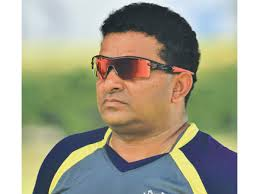
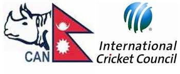
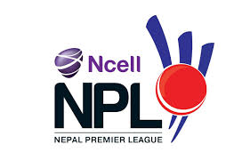

Pubudu Dassanayake

coach ofnepali cricket team
Cricket is the second most popular sport in Nepal, catching up with football as the country's most popular sport thanks largely to the spread of television to the rural communities and qualification of thenational team in the 2014 ICC World T20 in Bangladesh. Nepal's playing season runs from September to November and starts again in March before finishing in May. The National Cricket Academy, NCA was formally opened in January 2013 by the Cricket Association of Nepal to guide emerging players and to provide continuous training facilities to the men's national team, under-19 team and the women's national team.
As of December 2012, there were 429 senior cricket clubs and 227 junior cricket clubs in Nepal.
Condition
Improvements to the communication and transport infrastructures in Nepal allowed the game to expand outside Kathmandu in the 1980s and Nepal became an Affiliate Member of the International Cricket Council in 1988. A major development programme was begun in the early 1990s, with regional and district tournaments established and cricket being promoted in schools.
  Interest in cricket increased quickly, and demand to play was such that teams in tournaments had to be restricted until more facilities were built in the mid 90s.Nepal became an Associate Member of the International Cricket Council in 1996, which was the year the national side played for the first time, in the ACC Trophy in Kuala Lumpur, in which Nepal finished fourth out of six teams in their first round group, beating Brunei and Japan. The facilities in Nepal had improved enough by 1998 to allow them to host that year's ACC Trophy at grounds in Lalitpur and Kirtipur (at TU Cricket Ground) and Kathmandu. Nepal themselves were unsuccessful in the tournament, going without a win.

click here to get live streaming
enjoy!!!
T20I status and series
On 28 June 2014, the ICC awarded T20I status to Nepal, who took part and performed exceptionally well in the 2014 ICC World Twenty20. Nepal had already played three T20I matches before gaining the status, as ICC had earlier announced that all matches at the 2014 ICC World Twenty20 would have T20I status. Nepal played their first ever Twenty20 International series against Hong Kong in November 2014 in Sri Lanka. Initially the series was scheduled for three matches but only one match was played because of continuous rain and poor ground conditions. Nepal lost the match but Sompal Kami put in impressive performance by scoring 40 off 31 balls, coming in at No. 10. This is a world-record for the highest score made by a batsman at that position.Design by BIBEK BASHYAL